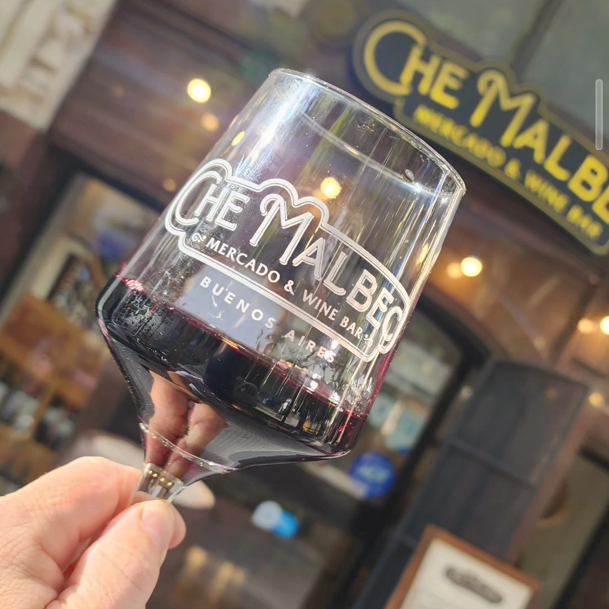

"Una atmósfera íntima y una atención excelente. El lugar perfecto en Buenos Aires para descubrir etiquetas boutique que no se encuentran en los supermercados tradicionales."
Más de 1.100 reseñas en Google con calificación de 4.8 estrellas
Degustaciones guiadas, vinos boutique y gastronomía casera en un espacio íntimo en el corazón de Buenos Aires.


"Una atmósfera íntima y una atención excelente. El lugar perfecto en Buenos Aires para descubrir etiquetas boutique que no se encuentran en los supermercados tradicionales."
Más de 1.100 reseñas en Google con calificación de 4.8 estrellas
Un espacio creado para disfrutar vinos argentinos, compartir una buena mesa y aprender sobre cada etiqueta en un ambiente relajado.
Etiquetas argentinas y de pequeños productores seleccionadas cuidadosamente para descubrir nuevos sabores fuera del circuito comercial masivo.
Aprendé y disfrutá de cada copa en una experiencia guiada donde te contamos el origen, el suelo y la historia de cada botella de manera cercana.
Picadas gourmet, empanadas caseras de autor y tablas de quesos seleccionados para crear un maridaje auténticamente porteño.

Vinos seleccionados por sommeliers para descubrir la riqueza de distintas regiones vinícolas de Argentina.
Una exploración guiada a través de diferentes cosechas y varietales seleccionados para paladares curiosos.
El complemento perfecto: picadas artesanales, empanadas y quesos finos combinados con etiquetas ideales.
Nuestra cocina es artesanal y honesta. Diseñamos la carta para acompañar y elevar la experiencia de cada copa de vino.
Ver Carta Completa
Che Malbec nació de una curiosidad simple: descubrir el mundo del vino y compartir esa pasión con otros. El proyecto fundado y liderado por Julián comenzó como una venta de vinos personalizada como hobby y evolucionó tras un viaje inspirador a Italia.
Hoy, es un wine bar boutique e íntimo dentro de un edificio histórico de Buenos Aires, pensado para disfrutar catas relajadas y etiquetas de alta calidad.


📍 Avenida de Mayo 777
Monserrat, CABA, Argentina
Reservá tu mesa y descubrí la experiencia íntima de Che Malbec.
Hablar por WhatsApp